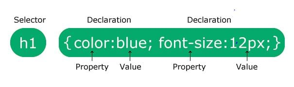

Essential Things in CSS
- Curly Braces
- Colons
- Semi-Colons
- Selectors
- Declarations
Structure of CSS
Selector – the HTML element you want to style.
Property – the style attribute you want to modify.
Value – the weight or setting of the attribute you want to apply to the element property.
Declaration – a single instruction that defines a specific style for an element.
Declaration Block – contains one or more CSS declarations that define the style rules.
Stylesheet and Its Parts
A set of instructions to a web browser on how to display various elements on a web page is known as a stylesheet.
Every CSS (whether it is in a .css file or embedded in an HTML document) is made up of statements that define the appearance of elements.
Stylesheets help separate content from appearance and guide the browser in displaying pages in a specific way.
Two Things to Remember When Using CSS
- The type attribute should be enclosed in the style tag with the value “text/css”.
- CSS code used to be enclosed in HTML comments (<!--...-->) to hide it from browsers that didn’t support CSS. However, all modern browsers support CSS now.
Three Kinds of CSS
- External CSS
- Internal CSS
- Inline CSS
External CSS
- Allows you to change the layout of your entire website by modifying one external file.
- Has a .css file extension.
- The most global type because it can be applied to many pages at once.

Internal CSS
- Used for creating document-wide style rules.
- Placed between the <head> tags.
- Overrides external style sheets.
- Written inside a <style> container tag.
Inline CSS
- Stored directly in the style attribute of an HTML tag.
- Overrides both external and internal style sheets.
- Written using the “style” attribute inside the body tag.
Reflection
In this lesson, I learned about the different types of CSS stylesheets, their uses, and advantages. I also understood where to place them in HTML and how each type affects the layout and styling of web pages.